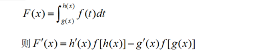
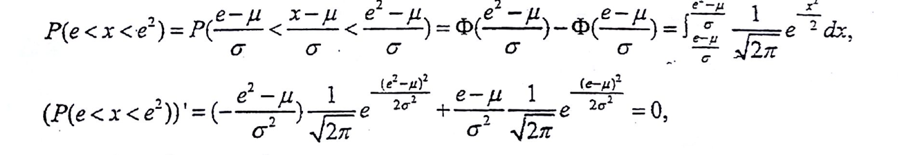
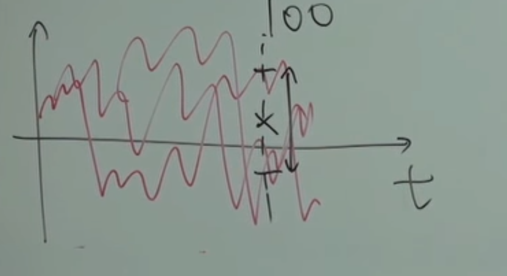

1.概率论的基本概念
1.1 样本空间与随机事件
随机试验：对随机现象的观察、记录、实验
样本空间：随机试验所有可能结果构成的集合 记为 $S$
1.2 事件的相互关系及运算
同集合的概念差不多
包含关系 $A\subset B$ : A事件的发生一定导致B发生
相等关系 $A=B$ : 当$A\subset B \bigwedge B\subset A $
和事件 $A\cup B$ : A B至少一个发生
积事件 $A\cap B$ 或 $AB$ 或 $AB$ ：AB同时发生
差事件 $A-B$ : A发生且B不发生
*逆事件 $\bar{A}$
$AB=\Phi$：A B互斥或不相容
1.3 频率
频率是0~1之间的一个实数
频率定义:$f_n(A)=n_A/n$ $n_A$:次数 $n$:试验次数
性质
1.$0\le f_n(A)\le 1$ (定义)
2.$f_n(S)=1$ (样本空间中的事件必然发生)
3.$A_1 A_2 …A_n$不相容 有 $f_n(\bigcup_{i=1}^N A_i)=\sum_{i=1}^n f(A_i)$ (不相容事件至少一个发生的频率等于各个事件频率和)
1.4 概率
性质
1.非负性
2.$f_n(S)=1$ (必然事件概率=1)
3.可列可加性 $A_1 A_2 …A_n$不相容 有 $P_n(\bigcup_{i=1}^N A_i)=\sum_{i=1}^n P(A_i)$ (不相容事件至少一个发生的频率等于各个事件概率和)
公式
1.$P(B-A)=P(B)-P(AB)$
2.$P(A+B)=P(A)+P(B)-P(AB)$
多个事件和时 P=单个事件概率和-任2个事件积概率和+任3个事件积概率和-…+…
1.5 古典概型
1.不放回抽样
step1:计算样本总数
step2:计算包含指定事件的样本数
step3:相除
顺序无关时，可以用组合数：
如 黄球2，白球3个。 取两次都是白球 $P(A)=C_3^2/C_{5}^2$
有a个白球取n次恰好取到k个白球一般情况: $P=\frac{C_a^kC_b^{n-b}}{C_N^n} $
2.放回抽样
1.6 条件概率
$P(B|A)=\frac{P(AB)}{P(A)}$ 在事件A发生的情况下发生B的概率
$P(AB)=P(A)P(B|A)=P(B)P(A|B)$
$P(ABC)=P(A)P(B|A)P(C|BA)$
….
$P(A_1A_2A_3..A_n)=P(A_1)P(A_2|A_1)P(A_3|A_1A_2)…$
1.7 全概率公式与贝叶斯
全概率公式
$P(A)=\sum_{j=1}^nP(B_j)*P(A|B_j)$ $B_j$为S一个划分中的一块
贝叶斯公式
即$P(B_i|A)=\frac{P(B_i)P(A|B_i)}{P(A)}=P(AB_i)/P(A)$ 知道B_i发生下评估在A发生下的情况
先验概率 $P(B_i)$
后验概率 $P(B_i|A)$
利用全概率公式与贝叶斯解题
可以画划分图
如
1.8 事件独立性
$P(AB)=P(A)P(B)$则说明事件A、B相互独立
A、B独立<=>$\bar A$、$B$独立<=>$\bar B$、$A$独立<=>$\bar B$、$\bar A$独立
事件两两独立不一定相互独立
2.随机变量及其分布
2.1 随机变量
$X=X(e) 为定义在S上的单值函数，则称X(e)为随机变量,简写X$
实质是一个函数，为$S\to R$的映射
$随机事件A={\{e:X(e) \in I\}} 可由随机变量表示相应随机事件e$
$如\{e:X(e)=1\} 也可记作X=1$
注:e->X(e)为单值函数
随机变量的类型
(1)离散型随机变量：X的取值为有限个或可数集(与自然数集合等势)
表示形式$P(X=x_k)=p_k$
几何分布(在伯努利试验中，成功的概率为p，若ξ表示出现首次成功时的试验次数)
$P(X=k)=(1-p)^{k-1}p$
X服从几何分布，记为X ～ GE(p) 。
$E(X)=\frac{1}{p}$
$D(X)=\frac{1-p}{p^2}$
(2)连续型随机变量
2.2 离散型随机变量
2.2.1 0-1分布（伯努利分布）
X=0或1,0<p<1
记为$X\sim 0-1(p) 或 X\sim B(1,p)$
$P(X=k)=p^k(1-p)^{1-k}$ k=0,1 p为1时的概率
样本空间只有两个元素e1 e2时总能定义服从0-1分布的随机变量
2.2.2 退化分布
X只能取一个值
$P(X=c)=1$
2.2.3 二项分布
X为n重伯努利试验下结果A发生的次数，$X=0,1,2,…,n$
$P\{X=k\}=C_n^kp^k(1-p)^{n-k}$ (特定顺序下发生k次的概率乘个组合数就行)
*二项分布记为$X\sim B(n,p)$ p是A在一次试验中的概率
2.2.4 泊松分布
$X\sim \pi(\lambda)$ 或 $X\sim P(\lambda)$
$P(X=k)={\lambda}^ke^{-k}/k!$
泊松分布的用途:
某人一天收到信件的数量
显微镜下某区域中的白血球
来到某公共车站的乘客
某事件以固定强度lambda随机且独立出现，该事件在单位时间内出现的次数，可看作泊松分布
泊松分布与二项分布的近似
n>10 p<0.1时
$C_n^kp^k(1-p)^{n-k}\approx e^{-\lambda}\lambda^k/k!$ $\lambda=np$
即当n>10 p<0.1时
$B(n,p)$ 可用$\pi(np)$近似
2.2.5 几何分布
$X\sim Geom(p)$
$P(X=k)=p(1-p)^{k-1}$
意义:
重复多次伯努利试验 进行到出现第一次A结果为止，实验的总次数符合几何分布
(二项分布是n次试验发生结果A的次数 几何分布是发生结果A的试验次数)
2.3 分布函数
$F(x)=P(X\le x)$ 为对X的概率分布函数,简称分布函数
意义：
X落在(-∞,x]的概率
离散型随机变量分布函数为阶梯函数 跳跃值$p_k=P\{X=x_k\}$
2.4 连续型随机变量
定义$F(x)=\int_{-∞}^x f(t) dt$
f(x)为概率密度函数
f(x)=F’(x)
2.5 均匀分布与指数分布
2.5.1 均匀分布
概率密度函数
$f(x)=\begin{cases}1/(b-a), &x\in(a,b); \cr 0, &otherwise\end{cases}$
易得
$F(x)=\begin{cases}0, &x<a; \cr (x-a)/(b-a), &a\le x<b; \cr 1, &x\ge b\end{cases}$
记为$X\sim U(a,b)$或$X\sim Unif(a,b)$
2.5.2 指数分布
$f(x)=\begin{cases}\lambda e^{-\lambda x}, &x>0; \cr 0, &x\le 0;\end{cases}$
得
$F(x)=\begin{cases}1-e^{-\lambda x}, &x>0; \cr 0, &x\le0;\end{cases}$
记为$X\sim E(\lambda)$或$X\sim Exp(\lambda)$
指数分布具有无记忆性:
$P(X>t_0+t|X>t_0)=P(X>t)$
2.6 正态分布(高斯分布)
2.6.1 一般正态分布
$f(x)=\frac{1}{\sqrt{2\pi}\sigma}e^{-\frac{(x-\mu)^2}{2\sigma^2}}$
记作$X\sim N(\mu,\sigma^2)$
特点：
1.关于$x=\mu$对称
2.$f_{max}=1/\sqrt{2\pi}\sigma$
$\mu$称为位置参数，改变后图形不变，图形平移
$\sigma$称为尺度参数，改变后分散程度改变,越大越瘦长
**随机变量的和可用正态分布近似（后面中心极限定理）
分布函数计算
$P(X\le x)=F(x)=\frac{1}{\sqrt{2\pi}\sigma}\int_{-∞}^xe^{-\frac{(t-u)^2}{2\sigma^2}}dt $
//无法手算。结果不是初等函数。。可用相关软件计算
2.6.2 标准正态分布
$Z\sim N(0,1)$
$\varphi(z)=\frac{1}{\sqrt{2\pi}}e^{-\frac{z^2}{2}} $
性质
$\Phi(-z_0)=1-\Phi(z_0)$
一般情况下
$\frac{X-\mu}{\sigma}\sim N(0,1) $
$3\sigma$准则: 随机变量大部分落在$3\sigma$范围内
2.7 随机变量函数的分布
问题:已知X分布，讨论Y=g(X)分布
方式1:由X与g(*) 求出Y的取值。利用等价事件思想，求出Y分布 （离散）
方式2:连续： 先求出分布函数F，Y用X表示，化简X范围，积分，求导
或者
h为反函数

3.多维随机变量及其分布
3.1 二元离散型随机变量分布律
$
X=X(e) \quad Y=Y(e) \quad 当(X,Y)只有有限对时，是二元离散型随机变量
$
落在某区域D的概率
$P((X,Y)\in D)=\sum_{(x_i,y_i)\in D}p_{ij}$
列X 行Y
X分布律是行相加 Y分布律是列相加
3.2 边缘分布
3.2.1 离散型
X的边缘分布$P(X-x_i)=\sum_{j=1}^∞p_{ij}=p_{i\bullet}$ (其实就是表行相加)
加上边际分布律后
3.2.2 连续型
3.3 条件分布
3.3.1 离散型
为在Y=y_j下 随机变量X的条件分布率 (条件定，X变)
3.3.2 连续型
在X=x条件下 Y的条件概率密度
3.4 二元随机变量分布函数
3.4.1 离散型
$F(x,y)表示落入X<x且Y<y的概率$
$F(x,y)关于x,y右连续 x+\varepsilon \quad y+\varepsilon 分别取极限相同 $
边际分布函数
条件分布函数
3.4.2 连续型
落在某区域D的概率
$P((X,Y)\in D)=\iint_{D}f(x,y)dxdy$
于是F对x,y二阶偏导=f(x,y)
边缘概率密度

3.5 二元均匀分布、高斯分布
3.5.1 均匀分布
区域D的面积为A
二元均匀分布的条件分布依然为均匀分布
3.5.2 高斯分布
两个边际分布都是正态分布。且与$\rho$无关
在X=x下，Y的条件分布依然是正态分布
3.6 随机变量的独立性
定义
则随机变量X Y相互独立
$p_{ij}=p_{i\bullet}\times p_{\bullet j}$
从概率密度上讨论
对于离散型
$P(X=x_i,Y=y_j)=P(X=x_i)P(Y=y_j)$
连续型
$f(x,y)=f_X(x)f_Y(y)$
推论1:对于二维正态分布（X,Y）
XY相互独立充分必要条件是 $\rho=0$
3.7 n元推广
1.$(X_1,X_2,X_3…X_n)$为n元随机变量
2.$F(x_1,x_2,…,x_n)$为分布函数
3.概率密度$f(x_1,x_2,…,x_n) $ n重积分后得到F
4.边际分布:
$f_{X_1}(x_1)=F(x_1,∞,∞,∞,…)$ 也就是把f从x2开始积到xn的n-1重积分
5.独立性
$f(x_1,x_2,…,x_n)=f_{X_1}(x_1)f_{X_2}(x_2)…f_{X_n}(x_n)$
两组多元随机变量的独立性

(两组随机变量相互独立则每组各取一个变量也相互独立，通过连续函数的映射后，仍然相互独立)
3.8 二元随机变量函数分布
U=g(X,Y) 的分布
1.对于离散型
算出U的取值，找出对应等价事件，计算
2.对于连续型
有f(x,y) 若Z=g(X,Y) 求Z的密度函数:
方法:先计算分布函数，再求导
3.9 Z=X+Y的分布


推论:
1.$X\sim N(\mu_1,\sigma_1^2),Y\sim N(\mu_2,\sigma_2^2)$有$X+Y \sim N(\mu_1+\mu_2,\sigma_1^2+\sigma_2^2)$
2.n个独立正态分布的变量的线性组合仍服从正态分布:
3.指数分布:
Z=X+Y后变成Gamma分布
4.
3.10 max与min的分布函数

n元时
4.随机变量的数字特征
4.1 数学期望
4.1.1 随机变量的数学期望
1.0-1分布
2.泊松分布 $X\sim \pi(\lambda)$
3.正态分布 $Z\sim N(\mu,\sigma^2)$
4.指数分布 $X\sim E(\lambda)$
5.二项分布 $X\sim B(n,p)$
6.均匀分布 $X\sim U(a,b)$
7.几何分布
4.1.2 随机变量函数的数学期望
1.一元
2.二元
4.1.3 E(X)的性质
1.随机变量的线性组合的数学期望=数学期望的线性组合
2.X\Y相互独立 E(XY)=E(X)E(Y)
4.2 方差
方差
标准差
计算方法
一般
X\Y相互独立时：
一般结论
1.两点分布
2.泊松分布
3.均匀分布
4.指数分布
5.正态分布
线性组合仍服从正态分布
标准化变量
性质
1.
2.
3.
4.3 协方差
4.3.1 协方差定义与性质
就是上面的
协方差表现X Y直接的线性相关性
Cov>0:正相关
Cov<0:负相关
Cov=0:不相关
性质
1.$Cov(X,X)=D(X)$
2.$Cov(aX,bY)=ab\bullet Cov(X,Y)$
3.$Cov(X_1+X_2,Y)=Cov(X_1,Y)+Cov(X_2,Y)$
4.3.2 相关系数
相关系数绝对值在0~1之间，越靠近1表明线性相关性越大
=1时有严格的线性关系
X Y相互独立->不相关，反之不成立
二元正态分布的第五个参数就是相关系数,
对于二元正态，相关系数=0 等价于 相互独立
4.4 矩
期望和方差其实就是1阶矩和2阶中心矩
线性变化下仍是正态分布
1.从n元里任取k元都能构成k元正态分布
2.X_i的任意线性组合构成一元正态分布
3.Y_i为X_i的线性函数 则Y也构成n元正态分布
4.若X_i全部相互独立，协方差矩阵为对角矩阵。
4.5 依概率收敛、切比雪夫不等式
1.依概率收敛
n充分大后，频率与概率的偏差越来越小
即
切比雪夫不等式
(给出一个随机变量与均值的偏差超过epsilon的上界还有小于epsilon的下界)
重要性
给出一个随机变量落在期望附近区域内或外 一个界的估计
5 大数定律及中心极限定律
5.1 大数定律
1.贝努里大数定律
频率在n充分大后趋近于概率p
定理1
含义为:依概率收敛 若X_i期望相同,收敛到E(X)
定理2
</center>
方差存在期望一定存在，反之不成立
定理3未要求方差存在
要求:所有随机变量分布相同，且期望存在。则随机变量的算术平均值扔依概率收敛到mu
5.2 中心极限定理
6 样本及抽样分布
简单随机样本:满足代表性(X_i与X同分布)、独立性(各X_i相互独立)
样本方差要除n-1
6.1 统计量
统计量是参数为随机变量的函数值。
6.2 统计量的分布
6.2.1 卡方分布

n越大，最大值右移
6.2.2 t分布


6.2.3 F分布


6.3 单个正态总体的抽样分布
总体$X\sim N(\mu,\sigma^2)$
(1)$\overline{x} \sim N(\mu,\frac{\sigma^2}{n})$(样本均值服从正态分布)
(2)$\frac{(n-1)S^2}{\sigma^2}\sim \chi^2(n-1)$ 且$\overline{X}$与S^2相互独立
定理二
有两个正态总体的情况
定理三
(1)$F=\frac{S_1^2/\sigma_1^2}{S_2^2/\sigma_2^2}\sim F(n_1-1,n_2-1)$
(2)$\frac{(\overline{X}-\overline{Y})-(\mu_1-\mu_2)}{\sqrt{\frac{\sigma_1^2}{n_1}+\frac{\sigma_2^2}{n_2}}}\sim N(0,1)$
(3)$\frac{(\overline{X}-\overline{Y})-(\mu_1-\mu_2)}{S_w\sqrt{\frac{\sigma_1^2}{n_1}+\frac{\sigma_2^2}{n_2}}}\sim t(n_1+n_2-2)$
</center>
作用:(1)对于单个正态整体，知道样本均值和方差后，对\mu和\sigma进行参数估计
(2)对于两个独立正态整体，知道样本的均值相减的分布还有方差相除的分布后，对mu相减和方程相除 进行参数推断
7 参数估计
参数:反应总体某方面特征的量
估计形式:点估计和区间估计
点估计:构造函数，使$\widehat{\theta}=\widehat{\theta}(X_1,…,X_n)$ 常用矩估计法、最大似然估计
7.1 矩估计
step1:$建立(\theta_1,\theta_2,…,\theta_n)和(\mu_1,\mu_2,…,\mu_n)的联系,用函数h,\mu_i=E(X^i)=h_i(\theta…)$
step2:求各参数关于k阶矩的反函数
step3:用样本各阶矩，代替整体各阶矩
总之就是靠各阶矩与未知参数的联系，然后用样本各阶矩代进去
7.2 极大似然估计
思想 从样本推出最可能导致该结果的总体分布
也就是，在某参数下，事件x1,x2,…发生的概率。找出这样的参数，让L最大
连续下
极大似然估计就是求Lmax,也可转换为求(ln L)max使计算简化
7.3 估计量的评价
4条准则
7.3.1 无偏性
若$E(\widehat\theta)=\theta 则为$无偏估计量
$|E(\widehat\theta)-\theta|为偏差$
若n->∞时,两者相等，则为渐进无偏估计量
纠偏方法：定义$E(\widehat\theta)=a\theta+b$
7.3.2 有效性
某参数方差小于另一个参数方差，则该参数更有效
7.3.3 均方误差
7.3.4 相合性
样本容量->无穷时的性质
7.4 区间估计
目的:找到两个统计量$\widehat\theta_1$和$\widehat\theta_2$使构成的随机区间以一定可靠程度，盖住$\theta$
$此为置信水平为1-\alpha的双侧置信区间$
$\widehat\theta_L:双侧置信区间下限\quad \widehat\theta_U:双侧置信区间上限)$
置信区间的精确度:区间的平均长度
误差限:精确度的一半,置信度相同时，选精确度高的.优先考虑置信度
$单侧置信上限:P\{\theta\le T_1\}=1-\alpha$
$单侧置信下限:P\{\theta\ge T_1\}=1-\alpha$
7.5 枢轴量法
step2:根据资料，假设。给出检验方法，对假设进行判断
检验统计量：取值大小和原假设是否成立有着密切关系的量
第1类错误：错误拒绝原假设
第2类错误：错误接受原假设
显著水平:
$\alpha,控制犯第一类错误的概率不超过\alpha,再寻求检验使犯第二类错误的概率尽可能小。常取\alpha=0.01,0.05,0.1等$
step3:根据显著水平和统计量分布确定临界值C
计算$P\{\overline X\ge C|H_0\}\le\alpha$得到C，确定拒绝域
step4:根据样本计算，得到结论
也可以P值法:
(1)$P_\le\alpha$,样本落在拒绝域内 (统计显著的)
(2)$P_>\alpha,样本不落在拒绝域内(统计不显著)$
8.1 Z检验 (标准差已知)
检验统计量取 $Z=\frac{\overline X-\mu_0}{\sigma/\sqrt n}$
拒绝域 $W=\{|Z|\ge z_{\alpha/2}\}$
P_=$P_{H_0}\{|Z|\ge|z_0|\}=2(1-\Phi(|Z_0|))$
8.2 t检验(标准差未知)
(1)设总体$X\sim N(\mu,\sigma^2)$
(2)用样本标准差S代替总体标准差
(3)拒绝域|T|>=k
即
计算样本$t_0=\frac{\overline x-\mu_0}{s/\sqrt n}$
8.3 成对数据的检验
差值$D_i=X_i-Y_i$
确定D的均值和方差
检验统计量$T=\frac{\sqrt n\overline D}{S_D}$
拒绝域$W=\{|T|\ge t_{\alpha/2}(n-1)\}$
例题
1.推导伯努利类型的均值
step1:let represent the i th experiment result,which $X_i=1$ is positive result,0 if negative result.
step2:We can easily get $E(X_i)=p$
the count of success experiments is $X_1+X_2+…+X_n$
So,$E(X)=E(X_1+X_2+…+X_n)=np$
2.Gaussian Distribution linear combination’s Expectation and Variance
or use
Independent()
Law of large numbers&Central Limit Theorem Part
In this part most questions are based on the follows formulas:
Matching success count Problem
Q:there are n things need to match,and randomly match
for convenience n take 5.
1.calculate the probability that only 1 matching success.
step1:Event $A_i$ represent ith matched success
step2:
consider the probability of $A_i$ is matched success and other 4 are matched fail


Gamma Distribution
Groups Division Question
To divide n things to k group,there has
m_k_i is the size of ith group
Q:Consider that now,we distribute 52 Pokers to 4 persons,What is the possibility of 4 A pokers are fall into the same person
1.The are $\frac{52!}{(13!)^4}$ way to distibute 52 pokers
2.We can choose one person has 4 A,and distribute other 48 poker to other 3 persons.So,there are $C_4^1\frac{48!}{(13!)^39!}$ ways.
3.1 divide 2
Gamma
Even and Odd Possibility Problem in discrete situation
Calculate P(Odd)+P(Even) and P(Odd)-P(Even)
Possibility Calculation
共分散->协方差
確率過程

F(X,t)
每个时间t上有一个概率分布X
因此对于每个时间t可以计算均值方差之类的